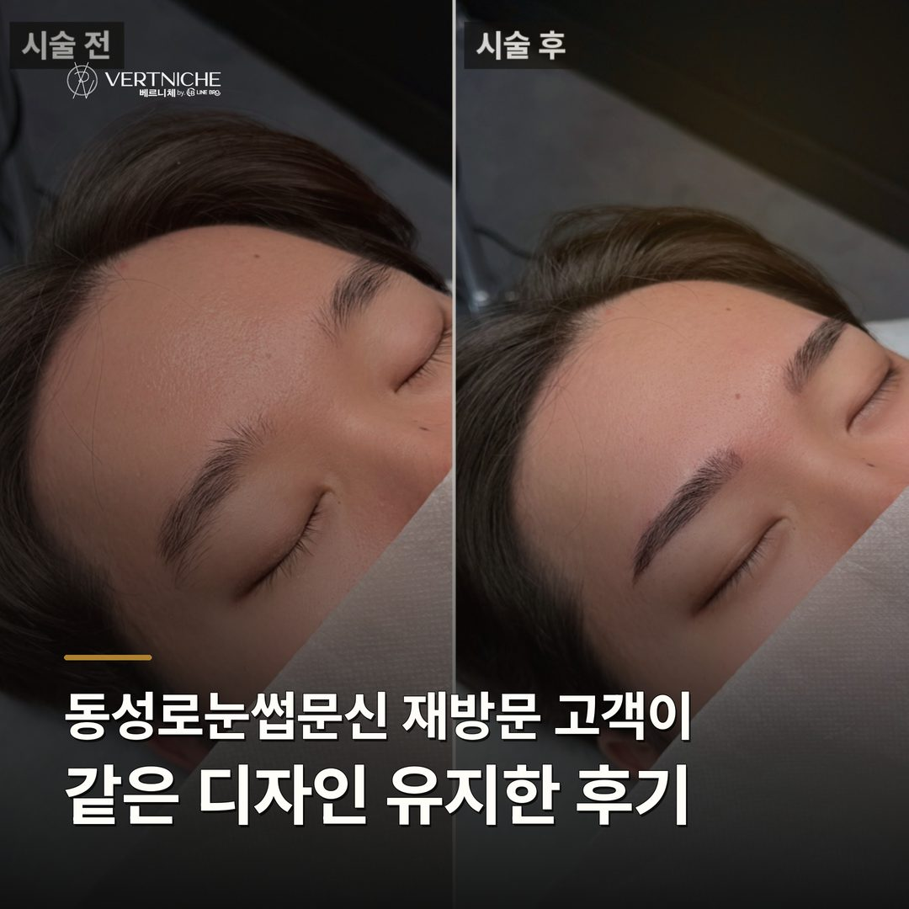

Care notes ·
동성로 눈썹문신, 재방문 때 같은 디자인 유지되는 이유

- 처음 시술한 사람에게 다시 오면 3년 전 디자인 기준이 그대로 남아 있어 유리하다
- 색이 빠져도 골격에 맞춰 잡은 디자인은 억지스럽지 않다
- 재방문은 새로 그리는 것이 아니라 남은 것을 살리는 일이다
동성로 눈썹문신을 다시 찾은 재방문 고객이 처음 디자인을 그대로 유지한 후기를, 2018년부터 남자 눈썹을 봐 온 원장 관점에서 정리했다.
3년 전 디자인이 왜 그대로 나올 수 있었나
이분이 처음 오셨을 때 잡았던 디자인 기록이 남아 있었어요.
색은 빠졌는데 왜 자연스럽게 이어졌나
재방문 오시는 분들이 오해하는 게 하나 있어요. 색이 다 빠졌으니까 처음부터 새로 그린다고 생각하시는 거예요.
재방문이라고 무조건 다 새로 하지는 않는다
이분한테도 말씀드린 건데, 재방문이라고 전체를 싹 다시 하는 게 정답은 아니에요.
같은 원장한테 다시 오는 게 유리한 이유
솔직히 말하면, 동성로 눈썹문신은 재방문일수록 처음 시술한 사람한테 오는 게 결과가 제일 좋아요.
자주 묻는 질문
몇 년 지나서 색이 다 빠졌는데 재방문 비용은 어떻게 되나요?
초회 시술과 재방문은 상태가 달라서 시술 전에 눈썹을 직접 보고 안내해 드려요. 전체를 다시 채워야 하는지, 부분만 보완하면 되는지에 따라 달라지거든요. 방문하셔서 상담하시면 정확하게 말씀드릴 수 있어요.
다른 곳에서 한 눈썹인데 동성로에서 재시술 받아도 되나요?
가능해요. 다만 남아 있는 색과 흐름을 보고 그 위에 어떻게 얹을지 판단하는 과정이 필요해요. 기존 디자인이 얼굴에 잘 맞으면 살리고, 방향이 어색하면 조정하는 쪽으로 상담부터 하는 걸 권해요.
재방문 시술도 회복 기간은 처음이랑 같나요?
네, 시술 후 회복 흐름은 초회와 똑같이 28일 기준으로 봐요. 2~4일차에 색이 진해 보이다가 5~7일차에 탈각이 오고, 이후 옅어졌다가 28일쯤 자리를 잡아요. 재방문이라고 회복이 빨라지진 않으니 시술 후 2주는 물과 땀 조심하셔야 해요.
요약입니다. 사례와 사진이 있는 전체 글은 네이버 블로그에서 볼 수 있습니다.